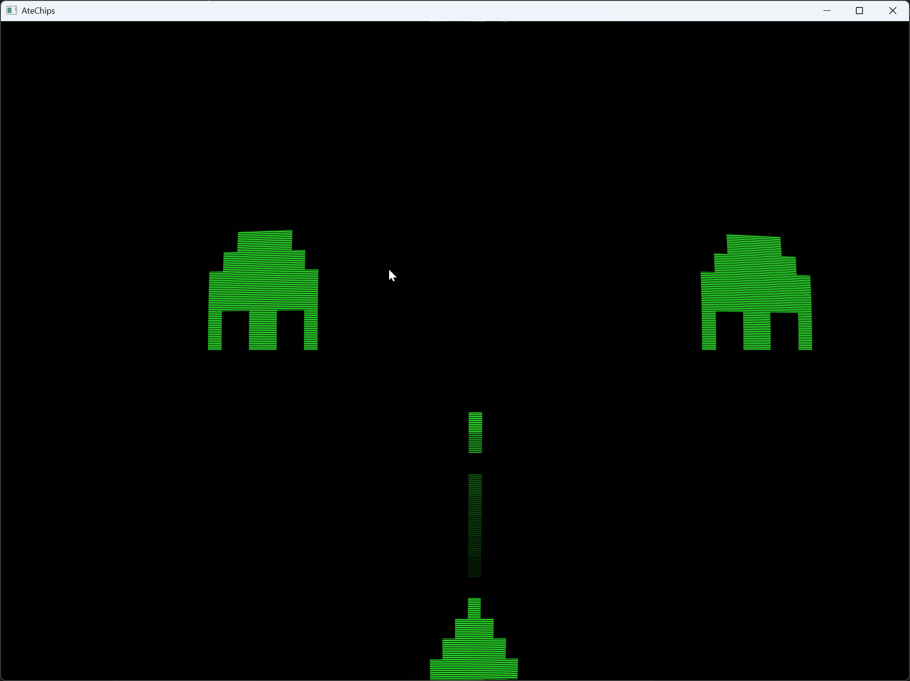
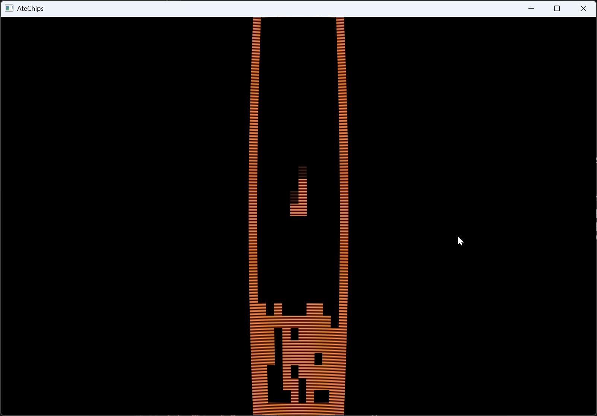
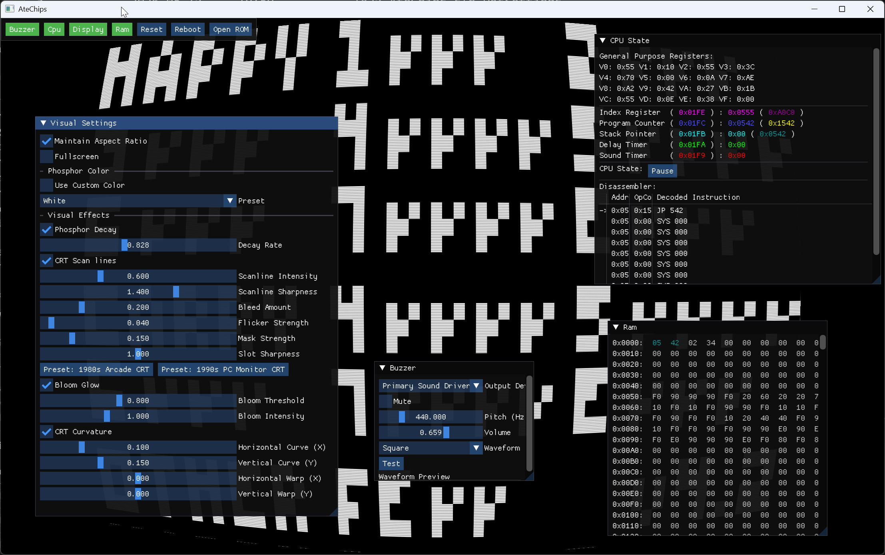
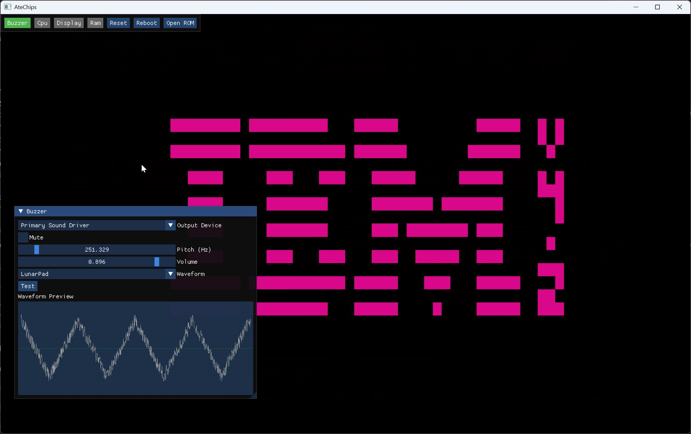

project
AteChips
A CHIP-8 emulator with CRT shaders, a custom audio engine, and a real-time ImGui debug interface.
AteChips is a CHIP-8 emulator built for people who care about how things sound and look as much as whether they run correctly. It implements the full CHIP-8 instruction set with configurable timing, but the interesting parts are everything around the emulation core.
The visual layer uses CRT-style GLSL shaders to replicate the phosphor glow, scanlines, and bloom of a period-appropriate display. It's not a filter slapped on top — the shader runs per-frame and responds to what's actually being drawn, making the flicker and persistence feel authentic rather than decorative.
The audio side goes considerably further than the single-tone beeper most CHIP-8 implementations offer. AteChips has a component-driven audio engine with dynamic waveform synthesis, pulse width modulation, ring modulation, detuning, and noise variants — all configurable in real time. A live waveform preview shows you exactly what the chip is producing.
On top of that sits an ImGui-based debug and configuration interface that exposes everything from CPU registers and memory to shader parameters and audio patch settings — without leaving the emulator window.




CRT shaders
Per-frame GLSL shaders render phosphor glow, scanlines, and bloom. Responds to live output — flicker and persistence feel authentic, not just decorative.
Custom audio engine
Dynamic waveform synthesis with PWM, ring modulation, detuning, and noise variants — all configurable live. Far beyond the single beep most CHIP-8 implementations produce.
Live waveform preview
A real-time waveform display shows exactly what the audio engine is synthesising, updated every frame alongside the emulator output.
Full CHIP-8 instruction set
Complete implementation of all 35 opcodes with configurable timing. Runs the full back-catalogue of classic CHIP-8 ROMs.
ImGui debug interface
Live access to CPU registers, memory, shader parameters, and audio patch settings — all within the emulator window, no external tools needed.
Saveable presets
Audio settings and waveform patches serialise to JSON, so you can save a favourite sound and reload it next session or share it with others.
Requires the .NET SDK and a machine with OpenGL support. Clone and build — OpenTK handles the graphics context across Windows, macOS, and Linux.